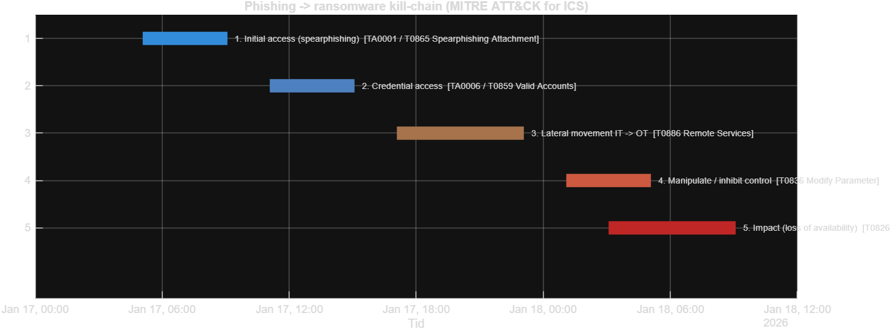
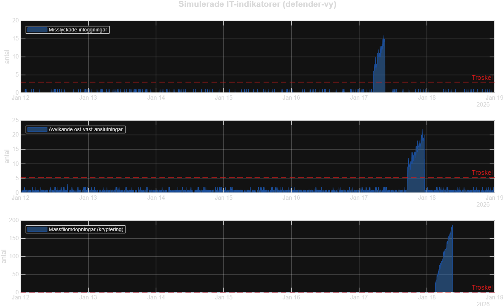

| Steg | ATT&CK for ICS | CSF 2.0 | Forsvarsatgard |
|---|---|---|---|
| 1. Initial access (spearphishing) | TA0001 / T0865 Spearphishing Attachment | PROTECT / DETECT | Sakerhetsmedvetenhet, e-postfiltrering, phishing-resistent MFA |
| 2. Credential access | TA0006 / T0859 Valid Accounts | PROTECT (PR.AA) | MFA, least privilege, kontoovervakning |
| 3. Lateral movement IT -> OT | T0886 Remote Services | PROTECT (PR.IR) | Segmentering IT/OT, zero-trust, jump-host |
| 4. Manipulate / inhibit control | T0836 Modify Parameter | DETECT (DE.CM) | Avvikelsedetektion, integritetsskydd for givare |
| 5. Impact (loss of availability) | T0826 Loss of Availability / T0813 Denial of Control | RESPOND / RECOVER | Immutabel backup, IR-plan, NIS2-rapportering |

Larm pa 195 av 2016 sampel. Eskalerande indikatorer (inloggningar -> ost-vast-trafik -> massfilomdopningar) ger forvarning innan OT-storningen intraffar, vilket mojliggor inneslutning och NIS2-rapportering i tid.
Se aven OT_Security_Report.html och KILL_CHAIN_PLAYBOOK.md.